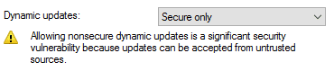

The second method is DNS dynamic updates. Dynamic updates is a DNS specific protocol designed for modifying DNS zones. Within the AD world, dynamic updates is primarily leveraged by machine accounts to add and update their own DNS records.
This brings us to another default ADIDNS zone setting of interest, the enabled status of secure dynamic updates.

Background on Dynamic Update Permissions
Last year, in order to leverage this default setting more easily during post exploitation, I developed a PowerShell DNS dynamic updates tool called Invoke-DNSUpdate.
The rules for using secure dynamic updates are pretty straightforward once you understand how permissions are applied to the records. If a matching DNS record name does not already exist in a zone, an authenticated user can create the record. The creator account will receive ownership/full control of the record.
If a matching record name already exists in the zone, the authenticated user will be prevented from modifying or removing the record unless the user has the required permission, such as the case where a user is an administrator. Notice that I’m using record name instead of just record. The standard DNS view can be confusing in this regard. Permissions are actually applied based on the record name rather than individual records as viewed in the DNS console.
For example, if a record named ‘test’ is created by an administrator, an unprivileged account cannot create a second record named ‘test’ as part of a DNS round robin setup. This also applies across multiple record types. If a default A record exists for the root of the zone, an unprivileged account cannot create a root MX record for the zone since both records are internally named ‘@’.
Below are default records that will prevent an unprivileged account from impacting AD services such as Kerberos and LDAP.
_gc
_kerberos
_kpasswd
_ldap
There are few limitations for record types that can be created through dynamic updates with an unprivileged user. The permitted types are only restricted to those that are supported by the Windows server dynamic updates implementation. Most common record types are supported. Invoke-DNSUpdate itself currently supports A, AAAA, CNAME, MX, PTR, SRV, and TXT records. Overall, secure dynamic updates alone is certainly exploitable if non-existing DNS records worth adding can be identified. (In the gosecure example, Antidote looked for plug-ins.company.local to load extra plugins, but it usually never existed.)
How can DNS records of worth be identified easily? By looking at LLMNR/NBNS requests!
In theory, a record that falls down to LLMNR/NBNS shouldn’t exist in DNS. Therefore, these records are eligible to be created by an authenticated user. This method is not practical for rare or one time only name requests. However, if you keep seeing the same requests through LLMNR/NBNS, it may be beneficial to add the record to DNS.
The upcoming version of Inveigh contains a variation of this technique. If Inveigh detects the same LLMNR/NBNS request from multiple systems, a matching record can be added to ADIDNS. This can be effective when systems are sending out LLMNR/NBNS requests for old hosts that are no longer in DNS. If multiple systems within a subnet are trying to resolve specific names, outside systems may also be trying. In that scenario, injecting into ADIDNS will help extend the attack past the subnet boundary.
PS C:\users\kevin\Desktop\Inveigh> Invoke-Inveigh -ConsoleOutput Y -DNS Y -DNSThreshold 4
[*] Inveigh 1.4 Dev started at 2018-07-05T22:32:37
[+] Elevated Privilege Mode = Enabled
[+] Primary IP Address = 192.168.125.100
[+] LLMNR/NBNS/mDNS/DNS Spoofer IP Address = 192.168.125.100
[+] LLMNR Spoofer = Enabled
[+] DNS Injection = Enabled
[+] SMB Capture = Enabled
[+] HTTP Capture = Enabled
[+] HTTPS Capture = Disabled
[+] HTTP/HTTPS Authentication = NTLM
[+] WPAD Authentication = NTLM
[+] WPAD Default Response = Enabled
[+] Real Time Console Output = Enabled
WARNING: [!] Run Stop-Inveigh to stop manually
[*] Press any key to stop real time console output
[+] [2018-07-05T22:32:52] LLMNR request for dnsinject received from 192.168.125.102 [Response Sent]
[+] [2018-07-05T22:33:00] LLMNR request for dnsinject received from 192.168.125.100 [Response Sent]
[+] [2018-07-05T22:35:00] LLMNR request for dnsinject received from 192.168.125.104 [Response Sent]
[+] [2018-07-05T22:41:00] LLMNR request for dnsinject received from 192.168.125.105 [Response Sent]
[+] [2018-07-05T22:50:00] LLMNR request for dnsinject received from 192.168.125.106 [Response Sent]
WARNING: [!] [2018-07-05T22:33:01] DNS (A) record for dnsinject added